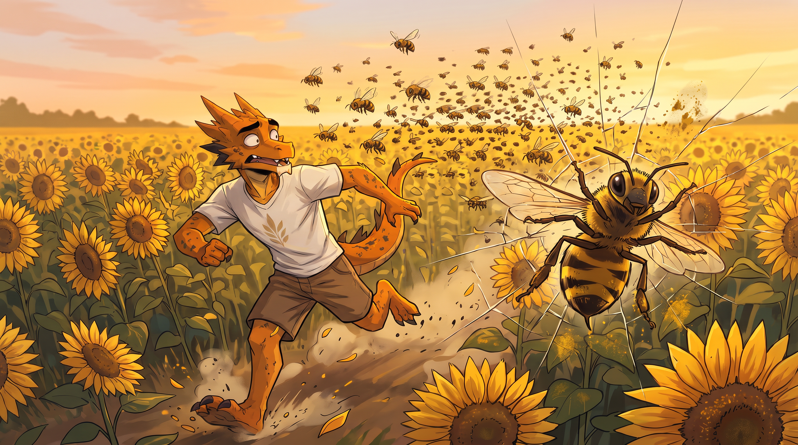
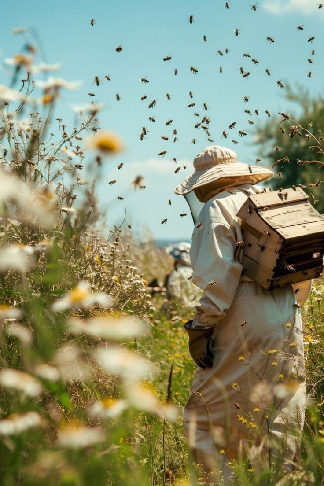

Наше пчеловодство
В O.A.S.I.S мы заботимся не только о растениях, но и о природном балансе. Собственная пасека — это наш вклад в сохранение биоразнообразия и повышение урожайности.

В O.A.S.I.S мы заботимся не только о растениях, но и о природном балансе. Собственная пасека — это наш вклад в сохранение биоразнообразия и повышение урожайности.

Пчёлы — это не просто мёд. Это основа здоровой экосистемы. Без опыления многие сельскохозяйственные культуры не смогут дать полноценный урожай. Именно поэтому мы создали собственную пасеку, которая помогает нам сохранять биоразнообразие и повышать качество наших семян.
Наши пчёлы живут в экологически чистой зоне, вдали от промышленных зон. Они собирают нектар с цветущих полей подсолнечника, гречихи, фацелии и дикорастущих трав, что даёт мёду неповторимый вкус и полезные свойства.
Мы верим, что устойчивое сельское хозяйство невозможно без заботы о пчёлах. Наша пасека — это не просто бизнес, это философия бережного отношения к природе.